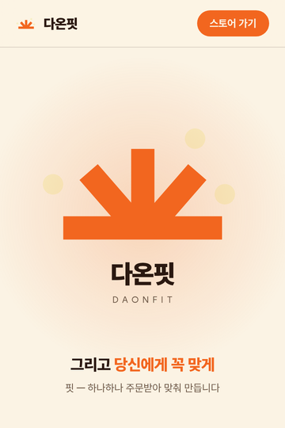

← bubblelab works / Selected work
브랜드 웹사이트외주 프로젝트다온핏 — 브랜드 스토리 랜딩
3D프린팅 생활 맞춤 소품 브랜드 다온핏의 랜딩 페이지. "흩어져 있던 좋은 것들이 모여, 당신에게 꼭 맞는다"는 브랜드 이야기를 스크롤로 직접 체험하게 만들었습니다. 기획–디자인–개발–인계 전 과정을 담당했습니다.

로고 조립이 끝난 순간 스크롤 스크럽 데모 — 멈춤·되감기Overview
구매·문의 도선을 스마트스토어와 인스타그램 DM 두 개로 좁힌 단일 페이지 구성입니다. 첫 화면에서 흩어져 있던 로고 조각들이 스크롤을 내리는 만큼 날아와 착륙하고, 완성되는 순간 브랜드 이름의 뜻(다온·핏)으로 이야기가 이어집니다. 서버 없이 정적 파일만으로 구동되어 호스팅 비용이 들지 않습니다.
Notes
- 스크럽 인트로 — 스크롤 위치가 곧 재생 바. 조각별 순차 착륙·착지 스쿼시·임팩트 연출을 되감기까지 지원하는 타임라인으로 설계
- 브랜드 타이포그래피 — 로고의 획 맺음에 맞춘 가변 폰트 셀프호스팅(unicode-range 분할로 사용 글자만 로드)
- 모바일 디테일 — 주소창 고정 내부 스크롤러, 100dvh 대응, prefers-reduced-motion 정지 렌더
- 전환 설계 — 고정 CTA 바, 아웃링크 UTM 계측, OG 미리보기 이미지 제작
Process
기획서 합의 → 시안 → 클라이언트 피드백 반복(인트로 연출 5개 비교안 포함) → 최종 컨펌 → 정적 패키지 인계. 모든 피드백 라운드는 전용 미리보기 주소에서 실기기로 확인하며 진행했습니다.